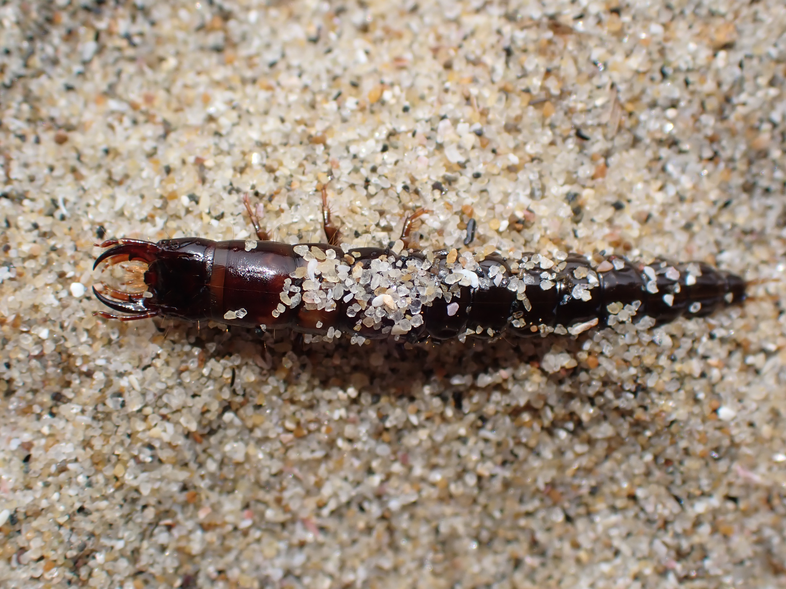

虫の不明種
Written on
2020年06月28日
"オサムシ類"
【これは、ヘビトンボの幼虫のようである。しかし、見つけたのは、波打ち際の砂浜だ。近くの灌漑用水が流れ込んでいるので、そこから迷い込んできたヘビトンボの幼虫なのかもしれない。それとも、まったく別の虫の幼虫だろうか？あるいは、海にいるヘビトンボの幼虫なのか？
追記：いろいろと調べると、海岸性のオサムシ類がおり、それらの幼虫と非常によく似ているので、オサムシ類の幼虫のようだ。】

2020年06月07日
"クモ"
【卵を抱いている。ハエトリグモ科なのか、アシダカグモ科なのか、はたまた全然知らない科なのか？４日前には巨大なアシダカグモが卵を抱いているのを見た。この時期、６月初旬は多くのクモの産卵期なのかもしれない。
このクモの顔は案外に可愛い顔をしている。クモをググり続けると、ちょっと嫌になる。】